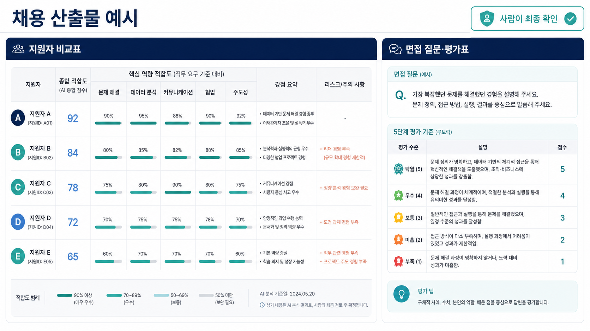
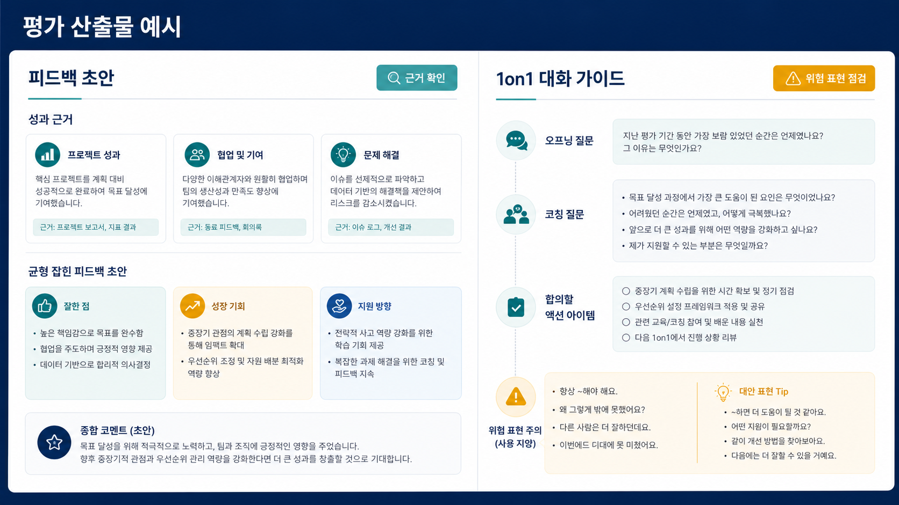
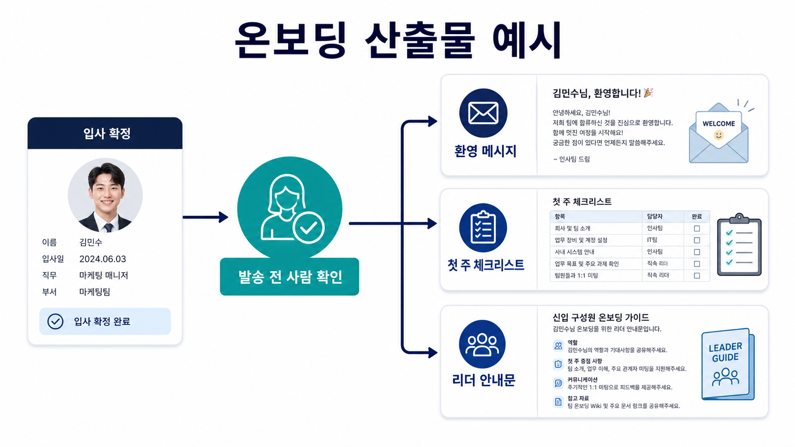
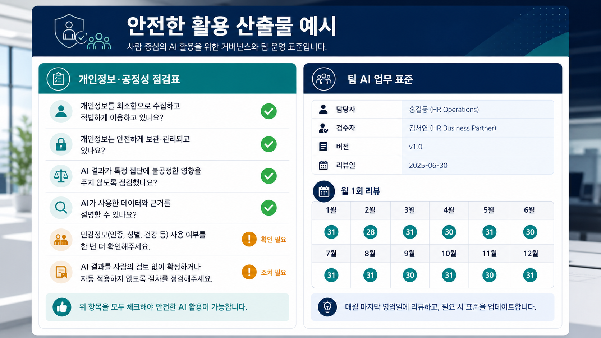

01
HR 사례로 이해
‘API·노드·HITL’을 먼저 외우지 않습니다. HR 업무 사례 → 쉬운 뜻 → 전문용어 순서로 설명합니다.
GPT·제미나이로 질문과 답변만 해본 HR 담당자도 이해할 수 있도록, 쉬운 말과 완성 예시로 시작합니다. 설정에 막혀 실습을 놓치지 않도록 OT와 대체 실습 경로도 교육 안에 포함했습니다.

AI 활용 경험과 보안 환경이 달라도 같은 학습목표에 도달하도록 운영합니다.
‘API·노드·HITL’을 먼저 외우지 않습니다. HR 업무 사례 → 쉬운 뜻 → 전문용어 순서로 설명합니다.
Option A OT 40분, Option B OT 45분과 설정 클리닉 35분을 정규 편성합니다.
채용·평가·온보딩·거버넌스 Output 이미지를 본 뒤 같은 구조를 따라 만듭니다.
HR 사례로 먼저 봅니다
완성 예시와 같은 결과를 만듭니다
안전한 정보만 바꿉니다
근거·개인정보·공정성을 봅니다
담당·검수·버전·점검일을 남깁니다
수업에서는 쉬운 말을 먼저 쓰고 전문용어는 괄호 안에 한 번만 소개합니다.
아래 이미지는 이해를 돕기 위해 생성한 완성 예시입니다. 실습에서는 교육용 더미데이터로 참가자가 직접 같은 구조를 만듭니다.
직무요건 근거를 정리하고, 사람이 최종 확인하는 비교표·질문·5단계 평가표입니다.

성과 근거·성장기회·지원방향을 나누고 위험 표현까지 점검합니다.

환영 메시지·첫 주 체크리스트·리더 안내문을 만들고 발송 전 사람이 확인합니다.

입력금지·공정성 점검과 담당자·검수자·버전·월간 리뷰를 한눈에 관리합니다.
| 시간 | 코드 | 쉬운 세션명 | 하는 일 |
|---|---|---|---|
| 09:00–09:40 | OT | 접속부터 파일 열기까지 함께 해보기 | 계정·보안·파일 업로드 점검, 대체 경로 전환 |
| 09:40–10:25 | M1 | AI에 일을 맡기는 방법 | 질문형과 단계형 사례 비교, 내 업무 후보 3개 |
| 10:25–10:35 | 휴식 | ||
| 10:35–11:35 | M2 | 내 HR 업무 중 먼저 줄일 일 고르기 | 월 절감시간 계산, TOP 3 선택 |
| 11:35–12:25 | M3-1 | 채용공고 초안과 차별 표현 점검 | 5요소 지시서, JD·공고 초안 |
| 12:25–13:25 | 점심 | ||
| 13:25–14:20 | M3-2 | 지원자 비교표와 면접 평가표 | 가상 지원서 5건, 근거 표시, 사람 최종판단 |
| 14:20–14:30 | 휴식 | ||
| 14:30–15:35 | M4 | 설문 200건을 교육 기획안으로 | 반복 주제·원문 근거·기획안 1장 |
| 15:35–15:45 | 휴식 | ||
| 15:45–16:40 | M5 | 온보딩 문서 3종 만들기 | 환영 메시지·체크리스트·리더 안내문 |
| 16:40–17:30 | M6 | 정보를 지키고 30일 계획 세우기 | 입력금지 기준·팀 지시서·실행일정 |
5요소의 뜻을 이해하고 채용 포지션 1개의 공고 초안을 만듭니다.
뜻 설명 12 → 나쁜/좋은 예시 8 → 초안 개선 25 → 확인 5
JD·채용공고 초안 1세트와 차별표현 체크 결과
가상 지원서의 개인정보를 가리고 직무요건 근거로 표와 질문을 만듭니다.
안전원칙 10 → 화면시연 10 → 가상지원서 실습 25 → 근거확인 10
지원자 비교표·면접 질문·5단계 평가표
한 번의 입력으로 세 문서를 만들고 사람이 발송 전에 확인합니다.
n8n 대신 웹 화면과 준비된 템플릿만으로도 완성할 수 있습니다.
환영 메시지·첫 주 체크리스트·리더 안내문
역할·맥락·제약·출력형식·예시를 하나씩 채웁니다.
팀원이 같은 지시서를 다시 실행해 결과 형식과 품질을 비교합니다.
팀 AI 업무 지시서 v1 3건
가상 지원서 5건으로 비교표·질문·평가표를 만듭니다.
실제 지원자 정보 금지, 근거 표시, 사람 최종판단
채용 AI 도우미와 실행 샘플
성과 근거를 바탕으로 균형 잡힌 피드백과 대화 질문을 만듭니다.
단정·비하·민감정보 표현을 체크합니다.
피드백 초안·1on1 대화 가이드
준비된 워크플로우를 복제해 변수만 바꿉니다.
접속 가능한 참가자는 직접 연결을 구성합니다.
연결 흐름 1식과 테스트 로그
입력 금지 정보, 편향 위험, 사용 기록, 검수 책임자를 정합니다.
법률용어 대신 “이 정보를 꼭 넣어야 하나요?” 같은 질문형 점검표를 씁니다.
개인정보·공정성 점검표
팀원이 찾고 실행하고 검수하고 개선하는 방법을 한 장으로 남깁니다.
담당자·검수자·버전·리뷰일
팀 AI 업무 표준·SOP·월간 리뷰표
다양한 보안 환경과 AI 활용 수준을 고려해 사전 점검과 대체 실습 경로를 운영합니다.
외부 AI·파일업로드·Workspace·n8n 접속 가능 여부를 수집합니다.
로그인·샘플 파일·팝업 차단을 확인하고 Green/Amber/Red로 표시합니다.
교육용 계정과 복제 템플릿을 전달하고 전원 수신·로그인을 확인합니다.
접속→파일 열기→첫 결과 생성→저장까지 함께 수행합니다.
가능합니다. 전문용어를 전제로 하지 않고 완성 예시를 보며 한 칸씩 따라가는 방식으로 시작합니다.
교육 1주 전 접속점검에서 확인하고, 당일에는 준비된 복제본 또는 강사 화면 따라 검수 경로로 전환합니다. 설정 제한 때문에 핵심 Output을 놓치지 않도록 설계했습니다.
아닙니다. D3-M3의 직접 연결은 선택 심화입니다. 기본 과정은 준비된 워크플로우를 복제해 흐름을 이해하고 테스트하는 데 집중합니다.
사용하지 않습니다. 전 실습은 가상 지원서·더미 설문·가상 구성원 정보로 진행합니다.
아닙니다. 안전한 결과물을 완성하고 근거·검수 방법을 설명할 수 있는지를 봅니다. 보안 제한이 있으면 대체 산출물을 인정합니다.
HR AX 실무 과정